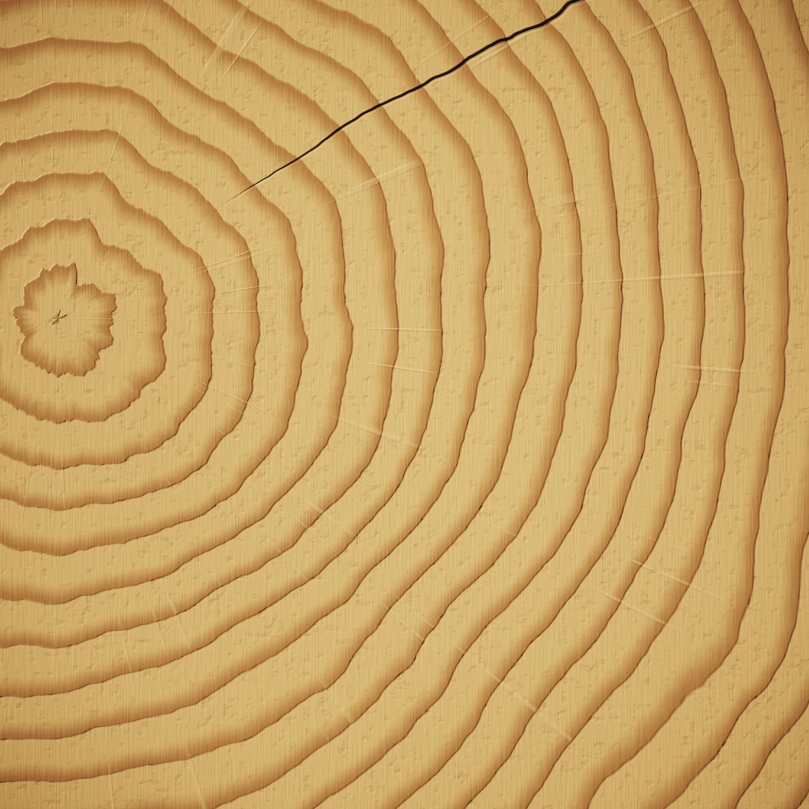

Projekte
Eine Auswahl der letzten Jahre. Die Maße stimmen, die Fotos zeigen das Holz aus der Nähe.
Aus der Werkstatt
-

Küchenblock
Pankow / Eiche, geölt / 3200 × 950 × 920 mm / 2025
-

Bibliothekswand
Kreuzberg / Nussbaum massiv / 5400 × 2850 mm / 2025
-

Arbeitstisch
Atelier Wedding / Hirnholzplatte Eiche / 2400 × 900 × 60 mm / 2024
-
Weinbar
Neukölln / Ladenbau, Eiche Altholz / Tresen 7,8 m / 2024
-
Kastenfenster
Charlottenburg / Restaurierung Kiefer / 14 Flügel / 2023
-
Faltwerktreppe
Friedrichshain / Esche, gebürstet / 16 Steigungen / 2023